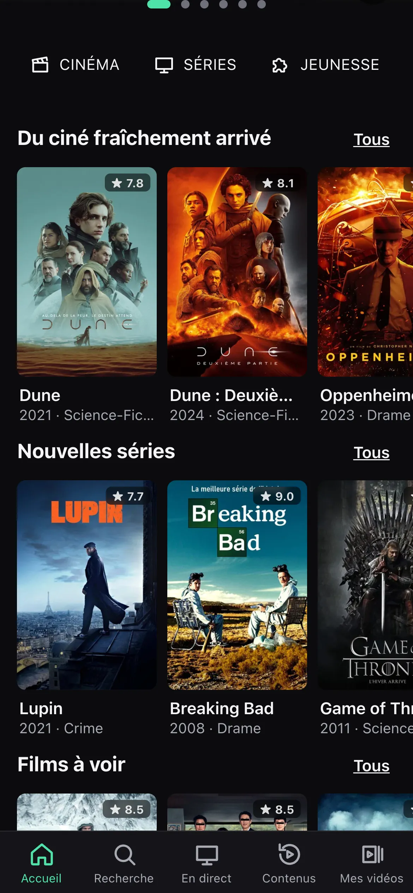

Xtream & M3U
कैटलॉग हिस्सों में पढ़े जाते हैं, बैकअप सर्वर, डिफ़रेंशियल सिंक: सिर्फ़ बदली हुई पंक्तियाँ दोबारा लिखी जाती हैं।
v2.0.0 · Android और Android TV पर उपलब्ध
Cyberstream आपके Xtream और M3U स्रोत चलाता है: लाइव चैनल, टीवी गाइड, फ़िल्में, सीरीज़ और कैच-अप। वही WebAssembly मॉड्यूल फ़ोन, टीवी, कंप्यूटर और ब्राउज़र पर चलता है।
डेमो स्रोत और TMDB मेटाडेटा के साथ रिकॉर्ड किया गया।
// 01 — सुविधाएँ
कैटलॉग हिस्सों में पढ़े जाते हैं, बैकअप सर्वर, डिफ़रेंशियल सिंक: सिर्फ़ बदली हुई पंक्तियाँ दोबारा लिखी जाती हैं।
वर्चुअलाइज़्ड चैनल × समय ग्रिड, दिन-ब-दिन नेविगेशन, gzip और टाइम ज़ोन का समर्थन। पिछले कार्यक्रम कैच-अप में चलते हैं।
TMDB से समृद्ध पेज: कलाकार, कलेक्शन, आयु रेटिंग, सीज़न और एपिसोड, आगे देखना और अगला एपिसोड।
30 से 60 मिनट का स्थानीय बफ़र: HLS स्ट्रीम पर पॉज़, ±10 सेकंड और लाइव पर वापसी, बैकअप स्ट्रीम पर अपने-आप स्विच के साथ।
“चैनल 5 लगाओ”, “Dune खोजो”, “30 सेकंड पीछे जाओ”। डिवाइस पर ही समझे जाते हैं, इंटरफ़ेस की 14 भाषाओं में।
टीवी पर दिख रहा कोड फ़ोन से स्कैन करें: रिमोट से URL टाइप किए बिना प्रोफ़ाइल, स्रोत और सेटिंग्स आ जाती हैं।
ARTE, france.tv और Okoo शामिल, साथ में YouTube RSS फ़ीड। सार्वजनिक चैनलों के लिए आधिकारिक स्ट्रीम पहले आती हैं।
SRT, WebVTT और OpenSubtitles हैश खोज। Trakt स्क्रॉबलिंग, वॉचलिस्ट और होम स्क्रीन पर सुझाव।
कई प्रोफ़ाइल, हर एक की अपनी भाषा, अवतार और आयु सीमा। सेवाओं के टोकन डिवाइस के सुरक्षित भंडार में रहते हैं।
// 02 — इंटरफ़ेस

// मोबाइल
फ़ोन पर टैब बार नीचे आ जाता है, पंक्तियाँ उँगली से स्क्रॉल होती हैं और प्लेयर पिक्चर-इन-पिक्चर सपोर्ट करता है। वही APK फ़ोन पर इंस्टॉल होता है और Android TV लॉन्चर में भी दिखता है।



// 03 — इंजन
// 04 — इंस्टॉल
Cyberstream-x.y.z.apk डाउनलोड करें।adb से टीवी पर:adb -d install -r Cyberstream-1.0.1.apkकम से कम Android 7 (API 24), WebAssembly सपोर्ट करने वाले WebView के साथ। उसके बाद ऐप ख़ुद GitHub पर नए संस्करण जाँचता है।
WebAssembly टार्गेट के साथ स्थिर Rust, Node.js 22.12 या बाद का, और npm।
rustup target add wasm32-unknown-unknown
cargo install --locked wasm-bindgen-cli --version 0.2.108
npm ci
cargo test --locked && npm test
npm run dev -- --host 127.0.0.1डेवलपमेंट में, बिना सब्सक्रिप्शन आज़माने के लिए सेटअप के दौरान डेमो स्रोत चुनें।
डेस्कटॉप संस्करण Electron का उपयोग करता है। इसे स्थानीय रूप से चलाएँ या macOS, Windows और Linux पैकेज बनाएँ:
npm run desktop
npm run desktop:dist